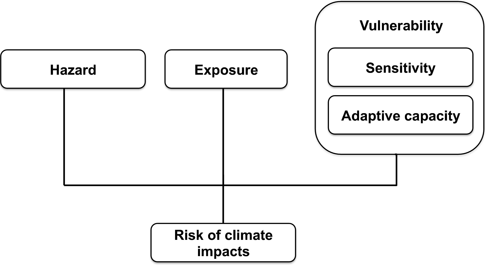
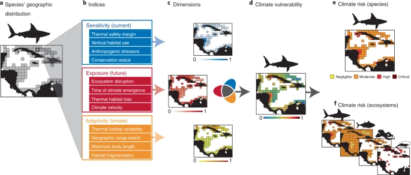

| term | definition |
|---|---|
| acclimation | The adjustment of an organism to experimental conditions in the laboratory without an adjustment in their genetics. Acclimation has been used to describe phenotypically plastic responses of organisms generated under controlled laboratory and experimental manipulations when the factor of interest can be isolated. |
| Acclimation | The adjustment of an organism to experimental conditions in the laboratory without an adjustment in their genetics. Acclimation has been used to describe phenotypically plastic responses of organisms generated under controlled laboratory and experimental manipulations when the factor of interest can be isolated. Source: Ross et al. (2023) |
| Acclimatisation | The adjustment of an organism to environmental conditions in the field or environment rather than the laboratory without an adjustment in their genetics. Acclimatisation has been used to describe phenotypically plastic responses in natural conditions. Source: Ross et al. (2023) |
| adaptation | the ability to change in response to the change |
| Adaptation | The evolutionary mechanism where natural selection of traits is genetically passed on, typically over many generations, to create an organism suited to the environment. Source: Ross et al. (2023) |
| Adaptive capacity | The capacity of the ecosystem or organism to improve and reorganise in response to stress such as climate change through phenotypic plasticity (acclimation, acclimatisation) or adaptation, distributional shifts, and rapid evolution of traits suited to new conditions. Source: Ross et al. (2023) |
| Epigenetics | The modification of phenotype plasticity of an organism through altered gene expression without an alteration to the DNA sequence. ‘Epi’ means above the DNA and includes DNA methylation, modification of histones, and non-coding RNA. Source: Ross et al. (2023) |
| exposure | the magnitude of the change in the environment |
| Exposure | The magnitude of the change in the environment |
| Fecundity | The maximum physiological potential reproductive output of an organism to produce offspring (reproductive output). This differs from fertility, which is the number of offspring born. Source: Ross et al. (2023) |
| MBON | Marine Biodiversity Observation Network; see MarineBON.org |
| resilience | the ability to recover from the change |
| Resilience | The capacity of an ecosystem, society, or organism to absorb disturbance and reorganise while undergoing change so as to retain essentially the same function, structure, identity, and feedbacks. Resilience reflects the degree to which a complex adaptive system is determined by its capacity to reorganise and adapt in order to avoid being disturbed again. Source: Ross et al. (2023) |
| sensitivity | the magnitude of response to the change |
| Sensitivity | The magnitude of response to the change |
| stressor | the stimulus that causes stress to an organism |
| Stressor | The stimulus that causes stress to an organism |
| vulnerability | combination of exposure and sensitivity |
| Vulnerability | combination of exposure and sensitivity |
Glossary
(Ross et al. 2023)
Glossary.
(Weis et al. 2016)
\[ V = f(E, S, A) \]
Vulnerability (\(V\)) is a function of exposure (\(E\)), sensitivity (\(S\)) and adaptive capacity (\(A\)).
(Jones and Cheung 2018)
Such vulnerability assessments recognize that a species’ vulnerability to climate change depends on an interaction between its intrinsic biological or ecological characteristics (sensitivity and adaptive capacity) and the extrinsic threats or stimuli (exposure and hazard) (Figure 1). In this study, we adopted the climate vulnerability and risk assessment framework used by the fifth assessment report of the Intergovernmental Panel on Climate Change (IPCC) (Field et al. (2014).
Sensitivity of a species, referred to here as the susceptibility to impacts from climate change, is affected by species’ biological and ecological traits. Species’ sensitivity may be moderated by their
adaptive capacity, which reflects a species’ ability to adapt and thus cope with, or avoid, the impacts of climate change.
As the unit of assessment is an individual species, we consider a species’ ability to shift in distribution to avoid or minimize negative impacts from changing habitat conditions on its viability as an adaptive response to climate change. Specifically, in this study, we focus on characteristics that determine a species ability to show this response, within its current distribution. Thus, the spatial response of a distribution shift may itself be influenced by adaptive characteristics included here. The combination of a species’ sensitivity and (lack of) adaptive capacity determines its vulnerability to climate change. Ultimately, the risk of impacts of climate change on the species is determined by its vulnerability as well as the potential occurrence of climate-related ocean changes (i.e., hazards such as warming, ocean acidification) and the degree of exposure to such event (i.e., exposure) (Figure 1).

(Zacharias and Gregr 2005)
Definitions of Sensitivity and Vulnerability
Sensitivity and vulnerability are central concepts in the protection of marine ecosystems, yet the marine literature provides few explicit definitions (Holt et al. 1997; Tyler-Walters & Jackson 1999). Consequently, their meaning often relies on the context in which they are used. To avoid context-dependent definitions of these terms, we took the following value-neutral approach to defining sensitivity and vulnerability.
It is axiomatic that all marine features have either evolved (in the case of biotic features) or been formed (in the case of abiotic features) within a certain range of environmental conditions. We define stress as a deviation of these environmental conditions beyond the expected range. Sensitivity is the degree to which marine features respond to such stress. Specifically, sensitivity is measured using one or more indicators (of species, communities, and habitats) that respond to one or more natural or anthropogenic stressors. These responses are potentially nonlinear and are likely to include interactions between stressors. In this context, sensitivity does not inherently assume the characteristics of fragility or intolerance with which it is often associated. There is no implied judgement that an increased association between the indicator and the stressor reduces a feature’s probability of persistence. Nevertheless, as exposure to a chronic perturbation or stress increases, the persistence of that feature is diminished.
Vulnerability is the probability that a feature will be exposed to a stressor to which it is sensitive. In other words, vulnerability is the likelihood of exposure to a relevant external stress factor (sensu Tyler-Walters & Jackson 1999), combined in some way with the exposure (duration, magnitude, rate of change) to that stress.
Subsumed under the concepts of sensitivity and vulnerability are the concepts of stability and fragility. Although these terms lack general consensus on their definitions, Holling (1986) states that
stability is the tendency of a system to attain or retain an equilibrium condition of steady state or stable oscillation.
Resilience is the ability of a system to maintain its structure and behavioral patterns when subjected to disturbance. A feature, therefore, that is stable or resilient in the presence of a stressor is not sensitive to that stress as we have defined it. Also, a feature that is sensitive to a stressor for which it has a low probability of exposure is not vulnerable.
Our definitions of sensitivity and vulnerability are consistent with the ESI approach used for oil spill response and countermeasures (Gundlach & Hayes 1978). Under the ESI approach a resource is defined as sensitive to oil if it would be harmed by physical contact with oil or concentrations of oil in water. A resource is defined as vulnerable if it is likely that it would be exposed to oil or high concentrations of oil for long enough periods for the oil to affect it. Vulnerability in terms of oil spills on shorelines, therefore, is a function of duration of exposure, recognizing that certain resources are vulnerable to oiling regardless of duration.
Our definition of a VMA, which incorporates the concepts of sensitivity and vulnerability, is a geographically definable area containing features that are sensitive to natural and/or anthropogenic stressors they are likely to encounter. Features may be biotic (species, communities) or abiotic (habitats) structures or processes.
We caution against equating VMAs as we have defined them (and their sensitivity and vulnerability components) with terms such as priority areas, biodiversity hotspots, critical habitat, environmental significance, and areas of interest, which are often used to identify areas of special concern or areas requiring management attention. Although certain VMAs may also represent priority areas or hotspots, depending on how these terms are defined and applied, an area may be sensitive or vulnerable but not meet criteria commonly used (e.g., species diversity) to identify these areas. In addition, although our definitions of sensitivity and vulnerability may contribute to measures or assessments of ecological (or ecosystem) integrity, these concepts are again different. Lastly, identification of an area as sensitive or vulnerable does not suggest that an area should be recommended as a marine protected area (MPA) or marine reserve or that MPAs are the only management tool applicable to the management and conservation of VMAs.
(Boyce et al. 2022)
climate change vulnerability assessments (CCVAs)

Distribution (\(xy\))
of speciesIndices (n=12):
species weightsExposure (current)
Thermal safety margin
Vertical habitat use
Anthropogenic stressors
Conservation status
Sensitivity (future)
Ecosystem disruption
Time of climate emergence
Thermal habitat loss
Climate velocity
Adaptivity (innate)
Thermal habitat variability
Geographic range extent
Maximum body length
Habitat fragmentation
Dimensions (\(D\))
Exposure (\(E\))
Sensitivity (\(S\))
Adaptivity (\(A\))
(Climate) Vulnerability
\[ V = E * S * A \]
(Climate) Risk (\(R\))
Species (\(sp\))
Ecosystem
\[ R_{eco} = \sum{sp} \]
From the supplement:
Following an early IPCC definition7 and subsequent broad adoption (4–6,8–10), species’ climate
vulnerability has been defined by three dimensions: their sensitivity, exposure, and adaptive capacity (adaptivity) to climate change.
Sensitivity refers to the propensity for a species to be adversely affected by its exposure to climate change.
Exposure refers to the extent to which species will be subjected to hazardous climate changes, including the magnitude of the effects.
Adaptivity refers to the potential of species to adapt to any adverse exposure to climate change.
These dimensions have close analogies in other disciplines, including community ecology and dynamic complex systems theory (11–13). For example,
sensitivity is analogous to the ecological concept of resistance,
exposure is analogous to reactivity, and
adaptivity is analogous to resilience (14–16).